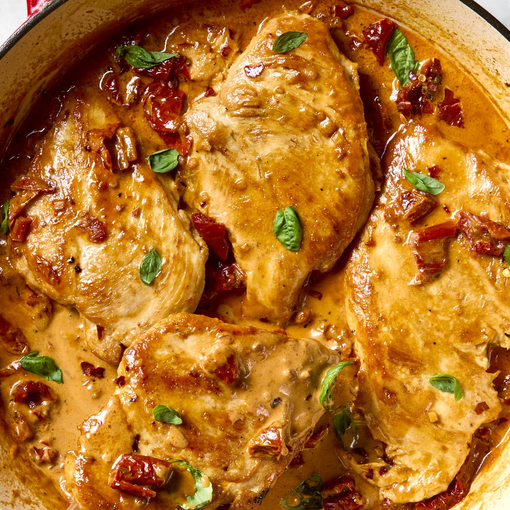

Home Page
Marry Me Chicken

Description
This chicken dish is perfect for date nights or a weekday family meal.
Similar to Tuscan chicken, this creamy and tender chicken dish is sure
to be an instant hit!
With a few ingredients and only 30 minutes of your time, you will have a dish that is said to get
you a marriage proposal. Happy cooking!
Ingredients:
- 3 large chicken breasts (boneless & skinless)
- 1/2 teaspoon salt
- 1/4 teaspoon ground black pepper
- 6 tablespoons all-purpose flour
- 2 tablespoons olive oil
- 2 tablespoons unsalted butter
- 3 cloves garlic (minced)
- 1 cup chicken stock
- 1 cup of heavy cream (whipping cream)
- 1/2 cup of shredded(or grated) parmesan cheese
- 1 teaspoon chili flakes
- 1/4 teaspoon oregano
- 1/4 teaspoon thyme
- 1/3 cup sundried tomatoes (chopped)
- 1 tablespoon fresh basil leaves (optional - as a garnish)
Directions:
- Season the chicken with salt & pepper, then dredge
in flour and shake off any excess.
- In a large skillet heat olive oil & melt the butter
on medium heat. Make sure to swirl the pan to coat evenly.
- Add chicken to pan (but do not overcrowd). Cook until
chicken is browned for about 4-5 minutes on each side. Or
until chicken is golden brown & cooked through. Remove
from pan onto a plate and set aside.
- In the same skillet, add the garlic and saute for about
a minute or until fragrant. Add the chicken stock and deglaze
the pan using a wooden spoon and pushing any bits stuck to the bottom.
- Turn the heat down to medium-low. Add the heavy cream
and parmesan cheese. Stir until incorporated and let the sauce
simmer for a couple of minutes. Then add the chili flakes, thyme,
and oregano. (NOTE: you can adjust the amount of chili flakes
added to your desired spice level)
- Season with salt & pepper and add in the chopped sundried
tomatoes. Put the cooked chicken back into the pan with the sauce.
Let the sauce simmer for a few more minutes and remove from heat
once the sauce reaches your desired thickness.
- (Optional) Garnish with chopped fresh basil leaves and
serve warm over pasta or rice.